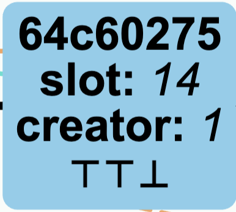
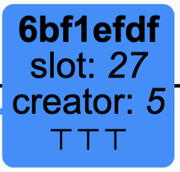
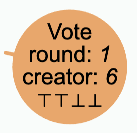
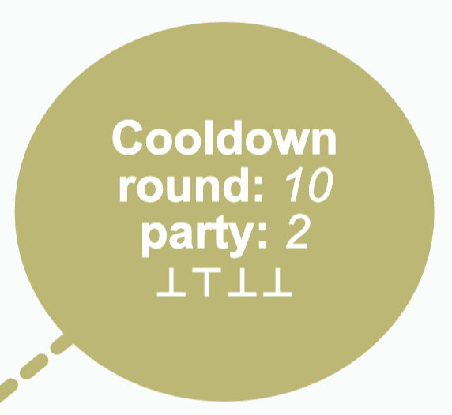
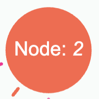

This is a simulator for the pre-alpha version of the Peras consensus algorithm, which is an extension of the Ouroboros Praos algorithm used in the Cardano blockchain to provide faster settlement bounds. Its main purpose is educational, but it's also aimed at exploring the parameter space and identify the best combinations depending on the objectives. The algorithm is still a work-in-progress.
Individual help texts are provided for each parameter. Hover over the ⓘ icon to see them.
Click the Simulate button to start the simulation. The Step button advances the simulation by one slot. The Stop button halts (and resets) the simulation. The Pause button pauses the simulation, and the Resume button resumes a paused simulation. Finally, the Randomize button sets the parameters to random values, which might or might not make sense.
The simulation provides a visual representation of the evolution of the chain for a given number of nodes. The backend runs the Peras algorithm with the given parameters for each nodes, simulating the passing of time (slots), creation of blocks, voting process, creation of certificates, and the diffusion of all messages taking into account the network delay Δ.
When the simulation runs, the Time section shows the current slot and round number, as well as the last state transition received from the backend. The Chain section shows the current state of the chain, with the blocks and certificates created by each node.
| Icon | Meaning |
|---|---|
|  | A block created by a node, linked to its predecessor. Contains the block hash (truncated to 8 characters), the creator's id, the creation time, and three icons representing truth value of the three conditions presiding to inclusion of a certificate within a block logic. |
|  | A block containing a certificate on-chain. Its content is identical to a normal block but color differs to ease spotting when a certificate is included on-chain. |
| A certificate created by a node, linked to the block it certifies. A certificate is only identified by its round number, as by construction there cannot be more than one certificate each round. | |
|  | A vote cast by a node, linked to the block it votes for. Contains the round number in which the vote is cast, the voter's id, and the truth values of the four different rules for casting a vote. |
|  | Record a node's decision to enter cooldown period, linked to the block that triggered it. Contains the round number in which the cooldown is started, the node's id, and the truth values of the conditions that lead to the node not casting a vote and entering cooldown. |
|  | A node in the network, identified simply by a number. This is a marker representing the state of a node: What's the tip of its best chain, the latest "live" certificate it knows (aka. cert'), and the latest on-chain certificate it knows (aka. cert*). |
For a much more detailed explanation of the algorithm and a thorough analysis of its behaviour, we refer the interested reader to the Peras website.